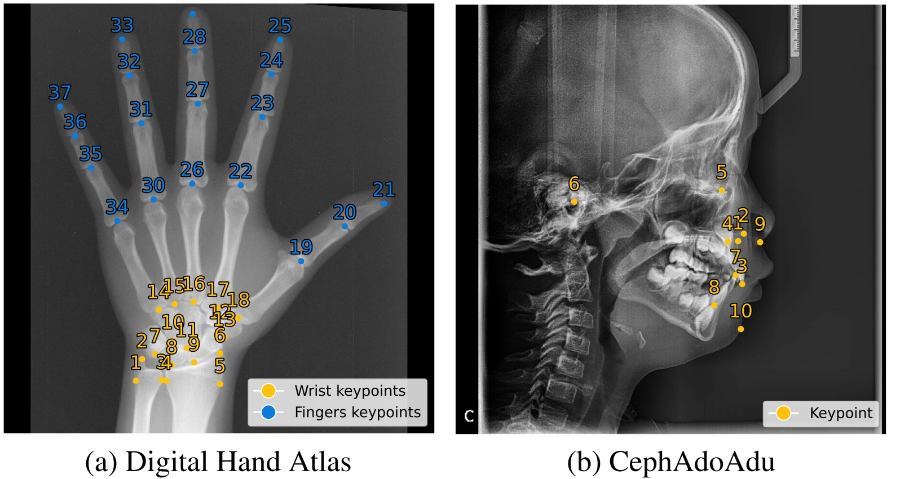
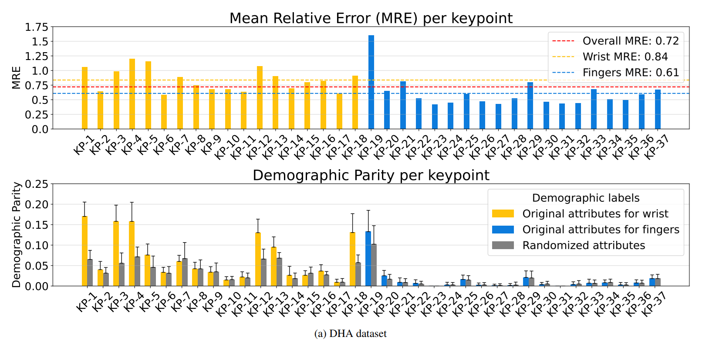
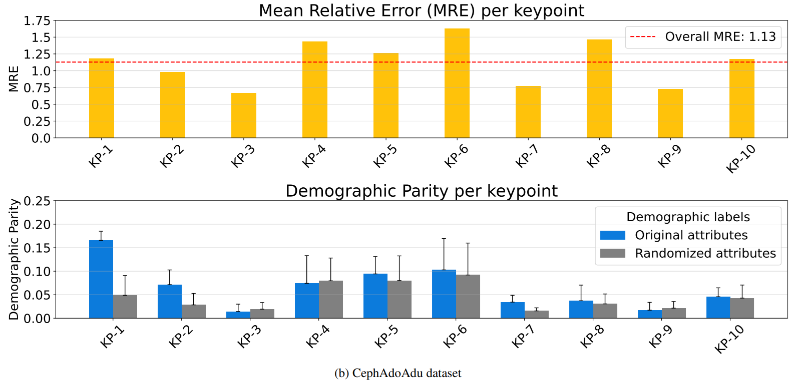
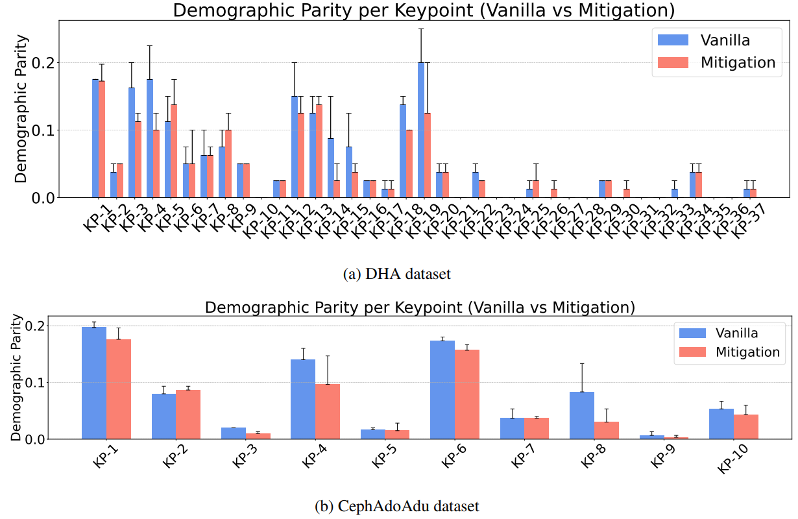
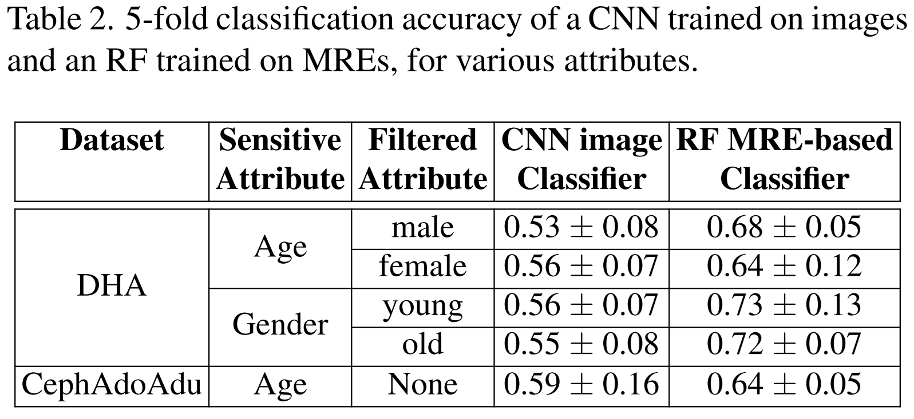
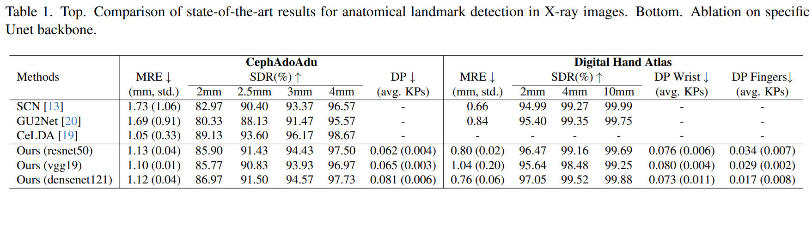

Datasets used for benchmarking are always acquired with a view to representing different categories equally, with the best intentions to be fair to all. Whilst it is usually assumed that equal numerical representation in the training data leads to similar accuracy among demographic groups, so far, there has been next to no investigation or measurement of this assumption for the anatomical landmark detection task. In this work, we define what it means for anatomical landmark detection to be carried out fairly on different demographic categories, evaluating the fairness of models trained on two publicly available X-ray datasets that are known to be balanced, and showing how unfair predictions can uncover metadata attributes intended to be hidden. We further design a potential mitigation strategy in the landmark detection context, adapting a group optimization method typically employed for debiasing image classification models, obtaining a partial improvement in terms of per-keypoint fairness, while paving the way for further research in this field.
Our work addresses the critical gap in fairness assessment for anatomical landmark detection by establishing a comprehensive evaluation protocol. We adapt the popular Demographic Parity (DP) metric from classification tasks to landmark detection, measuring fairness at the individual keypoint level rather than globally. The key innovation lies in recognizing that fairness must be evaluated per keypoint, as global measures can hide significant disparities affecting specific anatomical landmarks. We evaluate models on two carefully balanced X-ray datasets: the Digital Hand Atlas (DHA) with 37 landmarks and the CephAdoAdu dataset with 10 cephalometric landmarks, considering demographic attributes including age and gender.

Our comprehensive fairness evaluation reveals significant demographic disparities in landmark detection models, even when trained on carefully balanced datasets. For the DHA dataset, while the overall average Demographic Parity (DP) appears relatively low at 0.045±0.009, per-keypoint analysis uncovers substantial fairness issues. Notably, wrist keypoints (KP1-KP18) exhibit much higher DP values than finger keypoints, with some landmarks showing DP values of 0.20, representing a 20% gap in Success Detection Rate (SDR) across demographic groups. Interestingly, the most significant disparities occur between female patients in different age groups, contradicting medical literature that finds no significant age-related differences. For the CephAdoAdu dataset, several keypoints (KP1, KP4-KP6) show elevated DP values, with KP1 reaching 0.17. Statistical validation through attribute randomization experiments confirms that these disparities are significantly higher than expected by chance, establishing genuine fairness concerns in anatomical landmark detection.


To address the identified fairness issues, we adapt GroupDRO (Group Distributionally Robust Optimization) for the landmark detection context. Our approach creates fine-grained subgroups by combining keypoints with demographic attributes, resulting in K×G subgroups where K is the number of keypoints and G is the number of demographic groups. For the DHA dataset, this creates 148 subgroups (37 keypoints × 4 demographic groups), allowing targeted optimization for each keypoint-demographic combination. The GroupDRO objective minimizes the maximum expected loss across all subgroups, effectively improving performance for the worst-performing demographic groups. Our results demonstrate partial but meaningful improvements in fairness metrics while maintaining comparable overall accuracy, with maximum MRE drops of only 0.04-0.07mm across datasets.

Our investigation reveals a concerning privacy implication: the correlation between landmark detection errors and demographic attributes is strong enough to enable inference of sensitive patient information. Using Random Forest classifiers trained on per-keypoint Mean Radial Errors (MRE), we achieve classification accuracies significantly above random chance for demographic attributes. For the DHA dataset, we obtain up to 73% accuracy for age prediction and 72% for gender prediction when filtering by the complementary attribute. For CephAdoAdu, age prediction reaches 64% accuracy. Importantly, direct CNN classification on X-ray images yields near-random performance (53-59%), confirming that the privacy leak stems specifically from the fairness issues in landmark detection rather than obvious visual cues in the images. This finding highlights the critical need for fairness-aware approaches in medical AI systems to protect patient privacy.

To ensure our findings are not model-specific, we conduct comprehensive comparisons with state-of-the-art landmark detection methods including SCN, GU2Net, and CeLDA, as well as ablation studies with different U-Net backbones (ResNet50, VGG19, DenseNet121). Our results demonstrate that fairness issues are consistent across different architectures and methods, with similar Demographic Parity values observed regardless of the specific model used. This confirms that the identified fairness problems are inherent to the datasets and task formulation rather than artifacts of particular modeling choices, emphasizing the universal need for fairness-aware approaches in anatomical landmark detection systems.

This ICCV 2025 Workshop paper (STREAM workshop, pages 272-278) is the first assessment of demographic fairness in anatomical landmark detection on X-ray images. It adapts Demographic Parity (DP) from classification to landmark detection by using the Success Detection Rate (SDR, 2 mm threshold) as the true positive rate, and computes DP separately for every keypoint, because averages over all keypoints hide fairness issues that affect only a few landmarks.
Two balanced public X-ray datasets: the Digital Hand Atlas (DHA, 909 hand radiographs, 37 landmarks, attributes age and gender) and CephAdoAdu (700 cephalograms, 350 adults and 350 adolescents, 10 landmarks, attribute age). The main model is a U-Net with an ImageNet-pretrained DenseNet121 encoder, trained on 10 balanced hold-outs; its overall mean radial error (MRE) is 0.72 mm on DHA and 1.13 mm on CephAdoAdu. ResNet50 and VGG19 encoders, SCN, GU2Net and CeLDA are also compared.
Not fully, even on balanced data. The average DP looks low (0.045 on DHA and 0.080 on CephAdoAdu), but per keypoint it reaches 0.20 on the DHA wrist keypoints KP1 and KP3, a 20% SDR gap that is largest between female patients of the two age groups. Wrist keypoints have much higher DP than finger keypoints, and on CephAdoAdu KP1 reaches 0.17, above an attribute-randomized control. Different encoders give similar average DP.
Yes. A Random Forest trained on per-keypoint MREs predicts age or gender with up to 0.73 accuracy on DHA and 0.64 for age on CephAdoAdu (5-fold cross-validation), while a CNN trained directly on the X-ray images stays close to random guessing (0.53-0.59). The leak comes from the unfair errors of the landmark detector, a privacy risk.
The paper fine-tunes the detector with GroupDRO, defining K x G subgroups from keypoints and demographic groups (148 subgroups on DHA: 37 keypoints x 4 age-gender groups) and minimizing the worst-subgroup loss. DP decreases for many keypoints, but some remain unfair (e.g. DHA KP1, KP11, KP18, KP19 above 0.10), while the average MRE drops by at most 0.07 mm on CephAdoAdu and 0.04 mm on DHA.
@inproceedings{DiVia2025FairXrayLandmarks,
author = {Di Via, Roberto and Ciranni, Massimiliano and Marinelli, Davide and Clement, Allison and Patel, Nikil and Wyatt, Julian and Odone, Francesca and Santacesaria, Matteo and Voiculescu, Irina and Pastore, Vito Paolo},
title = {Are X-ray Landmark Detection Models Fair? A Preliminary Assessment and Mitigation Strategy},
booktitle = {Proceedings of the IEEE/CVF International Conference on Computer Vision (ICCV) Workshops},
month = {October},
year = {2025},
pages = {272--278},
publisher = {IEEE},
doi = {10.1109/ICCVW69036.2025.00034}
}Di Via, R., Ciranni, M., Marinelli, D., Clement, A., Patel, N., Wyatt, J., Odone, F., Santacesaria, M., Voiculescu, I., & Pastore, V. P. (2025). Are X-ray landmark detection models fair? A preliminary assessment and mitigation strategy. In Proceedings of the IEEE/CVF International Conference on Computer Vision (ICCV) Workshops (pp. 272-278). IEEE. https://doi.org/10.1109/ICCVW69036.2025.00034